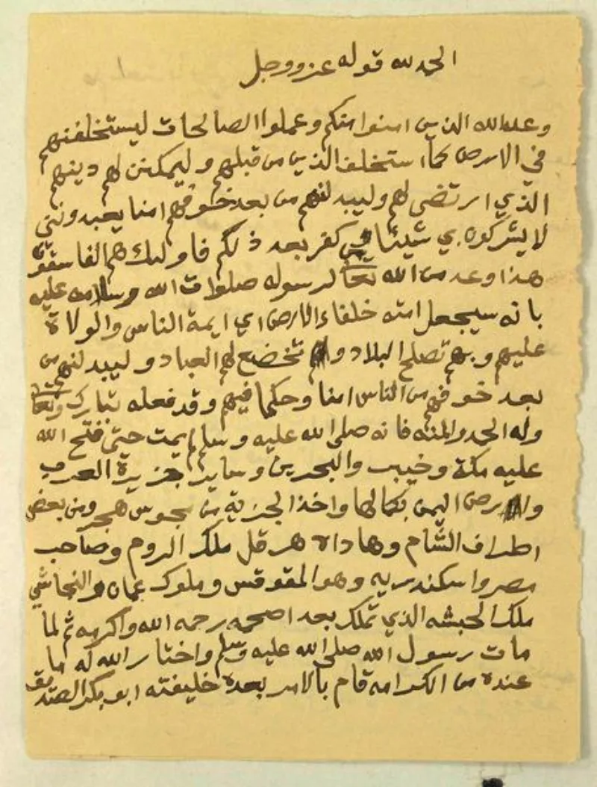
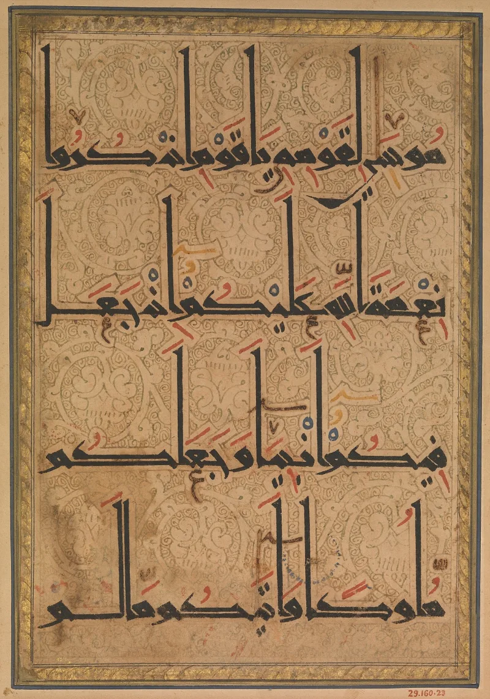

No good counter-argument has been published by Muslim scholars.
Quran 65:4 sets the iddah — the waiting period after divorce — for three groups of wives. One group is those "who have not yet menstruated."
Al-Tabari, Ibn Kathir and the standard tafsir tradition all read this as girls who have not yet reached puberty. Ma'arif al-Qur'an says the verse covers the young who have not reached the years of menstruation.
The law manuals of all four schools drew the matching rule.
Quran 33:49 says there is no waiting period at all if a marriage was not consummated. So a waiting period for a girl who has never menstruated only has work to do if such marriages were consummated.
That is the trap, and it is inside the law itself.
Modern writers, such as Discover The Truth, argue that the phrase means adult women whose periods are late or absent. They add that the verse sets waiting periods in general and does not endorse child marriage.
Some also note that a marriage contract does not imply consummation.
Strong for you, and it does not depend on any biography. The late-periods reading is a modern retrofit, held by no classical authority.
The tafsir tradition is unanimous the other way. So even if every report about Aisha were set aside, the law would still be in the text.
Raise it quietly. This is painful ground, not a scoring opportunity.
"How do Ibn Kathir and al-Tabari explain the last group in Quran 65:4? That is what I keep coming back to."


They say the phrase means grown women whose periods are late or absent.
Modern apologists, such as Discover The Truth, argue that those who have not menstruated means adult women. It refers to late or absent periods, not to children. They add that the verse addresses waiting periods in general, without endorsing child marriage. And some note that a marriage contract does not imply consummation.
This stands in contrast with the classical position, in Ibn Kathir and in Ma'arif al-Qur'an. Those state that the verse covers the young who have not reached the years of menstruation.
Strong for you, and it needs no biography: raise it quietly.
The late-periods reading is a modern retrofit. No classical authority held it. The tafsir tradition is unanimous that the clause covers girls who are not yet of age, and the law manuals of all four schools drew the matching rule.
The waiting-period logic is the trap. Quran 33:49 removes any waiting period for a marriage that was not consummated. So a waiting period for the never-menstruated only has work to do if such marriages were consummated.
This is the legal twin of the Aisha case. Even if every biographical report were discarded, the law would remain in the text.